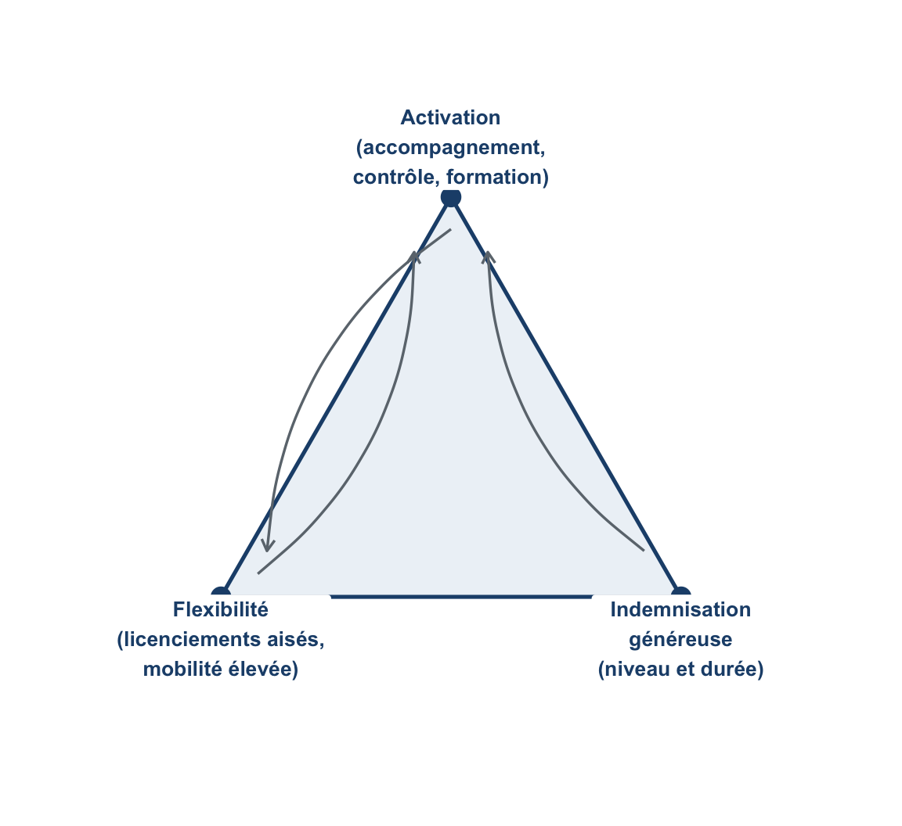
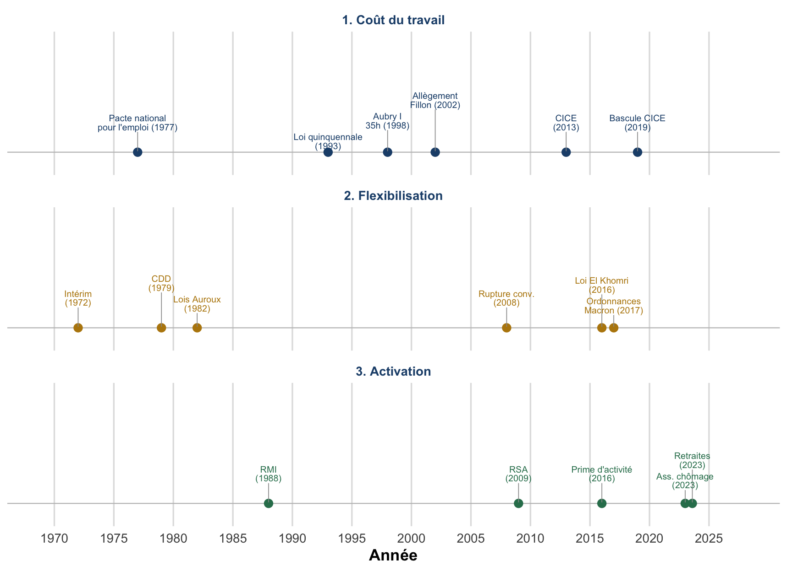
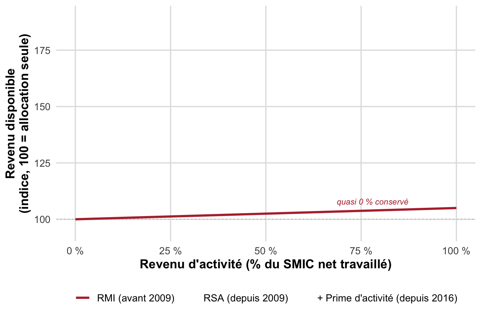
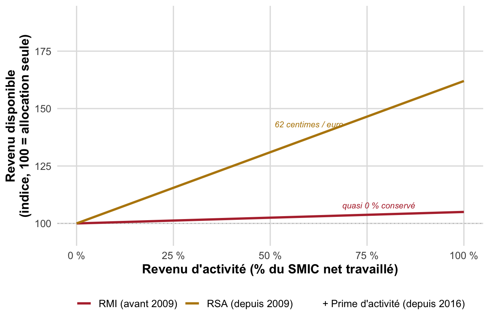
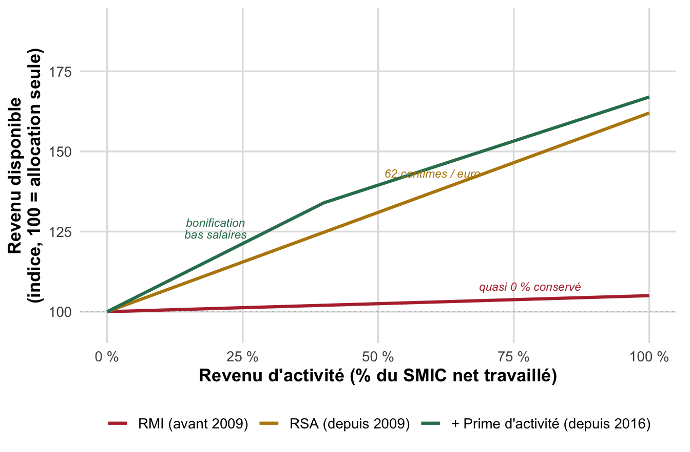
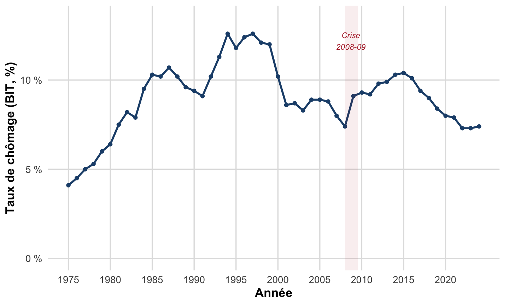
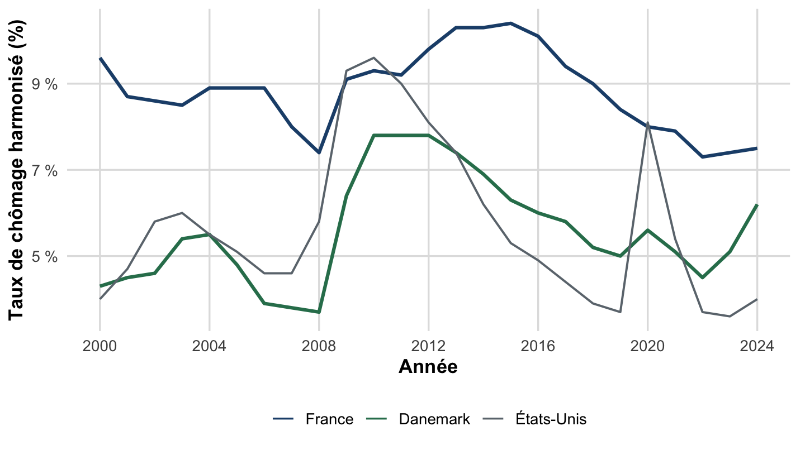
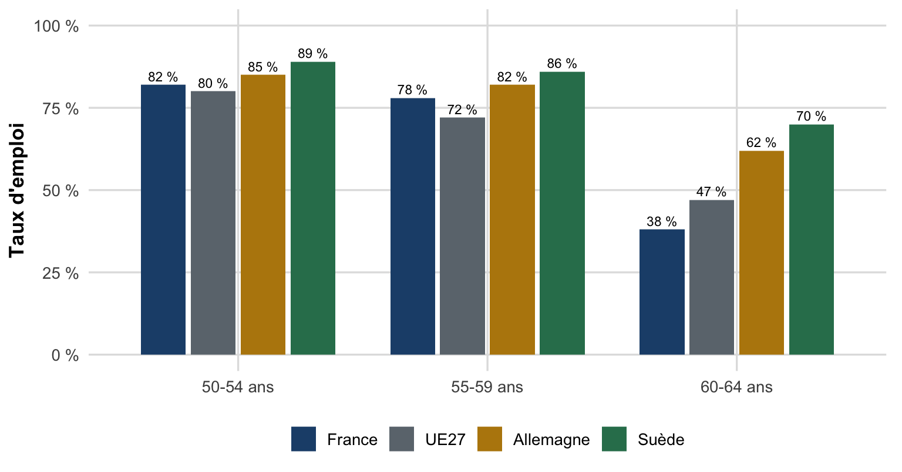

flowchart LR
A[Axe 1 - Cout du travail] --> D[Diagnostic neoclassique]
B[Axe 2 - Flexibilisation] --> E[Diagnostic WS-PS et appariement]
C[Axe 3 - Activation] --> F[Trappe a inactivite]
Quatre décennies de réformes n’ont pas résorbé le chômage structurel français
CM 10 : Politiques de l’emploi en France : chronologie, trois axes et synthèse du cours (Chapitre III, §II)
Pierre Beaucoral
L2 AES : Semestre 1
Plan de la séance
- Rappel : trois modèles, flexisécurité et trois axes de réforme
- Chronologie commentée des réformes françaises (1972-2024)
- Axe 1 : Baisse du coût du travail
- Axe 2 : Flexibilisation de l’emploi
- Axe 3 : Activation et trappe à inactivité
- Bilan : un chômage structurel qui résiste aux réformes
- Synthèse générale du cours (Chapitres I, II, III)
- Se préparer à l’examen
Objectifs
À l’issue de cette séance, vous saurez :
- Situer une réforme française du marché du travail sur l’un des trois axes : coût du travail, flexibilisation, activation.
- Expliquer la logique et les limites de la trajectoire RMI → RSA → prime d’activité (trappe à inactivité).
- Relier deux réformes récentes (assurance chômage 2023-24, retraites 2023) aux cadres conceptuels du chapitre.
- Interpréter l’évolution du taux de chômage français depuis 1975 à la lumière du diagnostic de chômage structurel.
- Mobiliser l’ensemble des trois chapitres du cours pour l’examen final (QCM + réflexion).
1. Rappel des cadres du Chapitre III, Section I
Trois modèles nationaux, un triangle d’or comme référence
Le CM précédent a distingué trois modèles de marché du travail, flexibilité (anglo-saxon), sécurité (Europe continentale, dont la France) et flexisécurité (Danemark), puis leur triangle d’or : flexibilité + indemnisation généreuse + activation, qui se renforcent mutuellement.

Figure 1: Rappel : le « triangle d’or » de la flexisécurité danoise, référence pour juger les réformes françaises.
Les réformes françaises se lisent selon trois axes récurrents
Depuis les années 1970, les gouvernements successifs, quelle que soit leur couleur politique, mobilisent trois grands leviers, isolément ou combinés :
- Baisse du coût du travail : réduire les cotisations patronales, en priorité sur les bas salaires.
- Flexibilisation de l’emploi : assouplir l’embauche, le licenciement et le temps de travail.
- Activation des chômeurs et allocataires de minima sociaux : rendre le retour à l’emploi plus incitatif et mieux accompagné.
Ces trois axes correspondent chacun à un diagnostic théorique vu au chapitre II : le premier suppose un chômage classique (néoclassique), le second cible les rigidités institutionnelles (WS-PS, appariement), le troisième traite la trappe à inactivité, à l’interface entre incitations individuelles et redistribution.
Chaque axe cible un diagnostic théorique du chapitre II
Cette correspondance justifie de situer toute réforme sur son axe avant de juger son efficacité : évaluer une baisse de cotisations à l’aune d’un diagnostic WS-PS, ou une réforme du droit du travail à l’aune d’un diagnostic néoclassique, mène à un contresens.
2. Vue d’ensemble de la chronologie
Dix-sept réformes, trois trajectoires parallèles depuis 1972

Figure 2: Chronologie des réformes françaises du marché du travail (1972-2024), classées selon les trois axes. Lecture : chaque axe a été mobilisé de façon quasi continue, sans ordre de priorité stable dans le temps. Source : synthèse du cours (Chapitre III, §II), d’après DARES et sources légales citées ci-après.
3. Axe 1 : Baisse du coût du travail
Un objectif constant depuis 1977, des dispositifs qui se succèdent
La logique : si le chômage a une composante classique (salaire réel/coût du travail trop élevé par rapport à la productivité, chapitre II), réduire les cotisations patronales, surtout sur les bas salaires, où l’élasticité de l’emploi au coût du travail est la plus forte, doit stimuler l’embauche.
- 1977 : Pacte national pour l’emploi : exonérations pour l’embauche de jeunes.
- 1993-1996 : Lois Balladur puis Juppé : premiers allègements généraux sur les bas salaires (1,1-1,3 SMIC).
- 1998 : Aubry I : allègements liés au passage aux 35 heures (jusqu’à 1,7 SMIC).
- 2002 : Allègement Fillon : fusion et extension des dispositifs (jusqu’à 1,6 SMIC).
- 2013 : CICE : crédit d’impôt sur les salaires jusqu’à 2,5 SMIC.
La bascule du CICE : un cas d’école pour évaluer une politique
Actualisation : bascule du CICE en baisse de cotisations (2019)
En 2019, le CICE a été transformé en baisse pérenne de cotisations patronales. Les évaluations du comité de suivi concluent à un effet net sur l’emploi plus modeste qu’attendu : l’essentiel des sommes a servi à restaurer les marges des entreprises plutôt qu’à embaucher.
Ce résultat doit être mis en regard du modèle néoclassique simple du chapitre II, qui suppose une transmission intégrale coût du travail \(\rightarrow\) emploi. Les données invitent à nuancer cette hypothèse : l’ampleur de la réponse de l’emploi dépend du partage entre salaires, marges et emploi, pas seulement du signe de l’effet.
4. Axe 2 : Flexibilisation de l’emploi
Élargir les marges d’ajustement de l’embauche et du licenciement
Rattacher chaque réforme à une forme de flexibilité (chapitre III, §I) :
- Numérique externe : ajuster le volume de travailleurs : intérim (1972), CDD (1979), licenciements facilités (ordonnances Macron, 2017). La rupture conventionnelle (2008) touche aussi cette dimension, tout en relevant de la sécurité des parcours (§I).
- Numérique interne : ajuster les heures travaillées plutôt que l’effectif : lois Auroux (1982, accords dérogatoires sur le temps de travail), loi El Khomri (2016, assouplissement du temps de travail).
Le tournant de 2015-2017 : la primauté de l’accord d’entreprise
- 2015 : Loi Macron : travail dominical/de nuit, licenciements collectifs appréciés au niveau national, réforme des prud’hommes.
- 2016 : Loi El Khomri (« loi Travail ») : primauté renforcée de l’accord d’entreprise sur la branche.
- 2017 : Ordonnances Macron : barème d’indemnisation obligatoire (plafonnement des indemnités prud’homales pour licenciement sans cause réelle et sérieuse), primauté de l’accord d’entreprise généralisée, licenciements facilités.
- 2019-2022 : Le barème, institué en 2017, est confirmé conforme au droit international par deux avis de la Cour de cassation (2019) puis par deux arrêts de sa chambre sociale (2022).
Erreur fréquente
Ne pas réduire la flexibilisation à une seule direction (« facilité de licenciement »). Elle touche aussi le temps de travail (35h, heures supplémentaires), le niveau de négociation (branche vs entreprise) et la sécurisation des parcours (rupture conventionnelle protège aussi le salarié, en ouvrant droit au chômage).
Actualisation : la réforme de l’assurance chômage 2023-2024
Modulation contracyclique de l’indemnisation. La durée d’indemnisation chômage est réduite lorsque le marché du travail est favorable (faible chômage) et allongée en période de dégradation.
Ce mécanisme relève davantage de l’axe activation que de la flexibilisation stricto sensu : il rapproche partiellement le système français de la logique danoise d’indemnisation conditionnelle (Section I du CM précédent), sans atteindre le niveau d’accompagnement nordique : le triangle d’or danois repose aussi sur un effort de formation que la réforme française ne réplique pas à la même échelle.
5. Axe 3 : Activation et trappe à inactivité
Le problème : une allocation peut décourager le retour à l’emploi
Trappe à inactivité (ou à pauvreté) : situation où la reprise d’un emploi peu rémunéré n’améliore que faiblement le revenu disponible, du fait de la réduction des prestations sociales à mesure que le revenu d’activité augmente. Le taux marginal de prélèvement implicite peut approcher 100 %.
Ce mécanisme relie directement la fonction de redistribution de Musgrave (chapitre I) et l’analyse micro des incitations au travail : trop protéger les revenus hors emploi peut, si le barème est mal conçu, freiner le retour à l’emploi qu’il cherche par ailleurs à faciliter.
RMI → RSA → prime d’activité : réduire la trappe à inactivité sans supprimer le filet de sécurité
RMI (1988)
Cumul allocation/salaire quasi nul : reprendre un emploi fait perdre presque l’intégralité de l’allocation.
RSA (2009)
Remplace le RMI. Cumul progressif : le bénéficiaire conserve 62 centimes par euro gagné (recul de 38 centimes d’allocation par euro). RSA-socle + RSA-activité.
Prime d’activité (2016)
Remplace le RSA-activité, dont le non-recours atteignait 60-70 % des ayants droit. Taux de recours nettement supérieur.
Erreur fréquente
Ne pas confondre RSA-socle (devenu simplement « RSA » après 2016, équivalent du RMI) et RSA-activité (remplacé par la prime d’activité). Cette trajectoire ne supprime pas les minima sociaux : elle fait évoluer leur architecture pour réduire les effets de trappe tout en maintenant un filet de sécurité.
Ce que « trappe à inactivité » veut dire : la pente compte
Cliquez pour faire apparaître chaque régime : plus la pente est forte, plus reprendre un emploi rapporte.



Figure stylisée à but pédagogique (aucune donnée réelle en euros) : seule la pente RSA (0,62, soit 62 centimes conservés par euro gagné) reprend un paramètre officiel, cité dans le texte de ce CM d’après DARES (2016), Prestations sociales et trappe à inactivité. Les profils RMI et prime d’activité illustrent schématiquement l’absence de cumul, puis la bonification ciblée sur les bas salaires.
Trois réformes, une même trajectoire de réduction de la trappe
flowchart LR
A[RMI 1988 - Cumul quasi nul] --> B[RSA 2009 - Cumul 62 centimes par euro gagne]
B --> C[Prime d activite 2016 - Taux de recours ameliore]
Synthèse de la section précédente (RMI, RSA, prime d’activité).
Actualisation : la réforme des retraites de 2023
Relèvement de l’âge légal de départ à la retraite de 62 à 64 ans (loi du 14 avril 2023).
Une logique d’activation par la marge extensive : retarder la sortie du marché du travail des seniors plutôt qu’inciter au retour à l’emploi des chômeurs. Elle s’oppose, dans son principe, aux politiques passives des années 1980-1990, qui avaient au contraire abaissé l’âge de la retraite pour partager le travail entre générations.
Le débat renvoie au taux d’emploi des seniors, structurellement bas en France par rapport à ses voisins, et à l’équilibre financier du système de retraite par répartition (hors périmètre de ce cours, mais lié à la contrainte budgétaire du chapitre I).
Le taux d’emploi des seniors reste bas en France par rapport à ses voisins

Figure 6: Taux d’emploi des 55-64 ans (%), 2000-2023. La France reste durablement sous l’Allemagne, la Suède et la moyenne de l’Union européenne : c’est cet écart d’une quinzaine à une vingtaine de points que le relèvement de l’âge légal cherche à réduire par la marge extensive. Source : Eurostat, enquête sur les forces de travail, table lfsa_ergan (taux d’emploi par groupe d’âge).
6. Bilan : un chômage qui résiste aux réformes
Le taux de chômage français reste structurellement élevé

Figure 7: Taux de chômage en France, 1975-2024 (définition BIT/OIT, moyenne annuelle, % de la population active). Quatre décennies de réformes sur les trois axes n’empêchent pas un niveau durablement plus élevé que dans les pays de comparaison anglo-saxons ou nordiques. Source : Banque mondiale, World Development Indicators (indicateur SL.UEM.TOTL.NE.ZS, estimation nationale, définition BIT), données Insee ; cohérent avec Insee (2017), Emploi, chômage, revenus du travail, éd. 2017 (7,4 % en 2008 ; 10,4 % en 2015 ; 10,1 % en 2016).
Vu en perspective : le Danemark reste sous la France, les États-Unis plus bas encore

Figure 8: Taux de chômage harmonisé BIT/OCDE (%), moyenne annuelle, 2000-2024 : France, Danemark (flexisécurité), États-Unis (flexibilité). Même série que fig-chomage-dk-fr-us-cm09 (CM précédent), reproduite ici pour appuyer la conclusion du bilan. Le Danemark reste durablement sous la France ; ce chiffre est la mesure harmonisée, à distinguer du chômage « net » enregistré danois (2,5-3 %, Danmarks Statistik), non comparable. Les États-Unis illustrent le modèle de flexibilité pure : niveau bas hors récession, mais volatilité plus marquée (pic net en 2009-10 et 2020) et sans le filet de l’activation danoise. Sources : OCDE/BIT, taux de chômage harmonisé annuel (séries LRHUTTTTFRA156S, LRHUTTTTDKA156S, LRHUTTTTUSA156S), via FRED, Federal Reserve Bank of St. Louis, d’après OCDE.
Les évaluations disponibles nuancent l’efficacité de chaque axe
Les évaluations convergentes (DARES, France Stratégie, comité de suivi du CICE) livrent un diagnostic nuancé, axe par axe :
- Coût du travail : effets positifs mais modestes sur l’emploi non qualifié.
- Flexibilisation : a surtout développé les contrats courts, sans réduire durablement le chômage structurel.
- Activation : a amélioré le taux de recours aux prestations, sans éliminer toutes les trappes à inactivité.
La flexibilisation a surtout démultiplié les contrats courts

Figure 9: Deux mesures de la part des contrats courts en France, 1982-2023. Stock : part des CDD et de l’intérim dans l’emploi salarié total (Insee, enquêtes Emploi), en plateau autour de 11-13 % depuis le milieu des années 1990. Flux : part des CDD dans les déclarations d’embauche hors intérim (DARES, mouvements de main-d’œuvre), qui progresse quasi continûment jusqu’à environ 9 embauches sur 10 en fin de période. Lecture : la flexibilisation a surtout intensifié le renouvellement des contrats courts (marge du flux), sans faire progresser à due proportion la part de l’emploi durablement précaire (marge du stock), ce qui nuance le diagnostic « moins de chômage structurel » attendu de cet axe. Sources : Insee, enquêtes Emploi, séries longues sur l’emploi temporaire ; DARES, déclarations préalables à l’embauche (DMMO-EMMO).
Pourquoi les résultats déçoivent-ils par rapport au triangle d’or ?
À retenir
Aucun des trois axes, pris isolément, n’a résorbé durablement le chômage structurel français. Le triangle d’or danois suggère que c’est la combinaison cohérente des trois leviers, pas leur usage séquentiel et partiel selon les alternances politiques, qui explique les résultats obtenus par les pays de flexisécurité.
Sources : DARES (2016) ; France Stratégie ; comité de suivi du CICE ; synthèse du cours (Chapitre III, §II).
7. Synthèse générale du cours
Trois chapitres, une même question : comment agir sur l’économie ?
- Chapitre I : cadre général de la politique économique : objectifs/instruments, règle de Tinbergen, fonctions de Musgrave (stabilisation, allocation, redistribution), modèle OA-DA pour la stabilisation conjoncturelle.
- Chapitre II : diagnostic du chômage : quatre cadres théoriques complémentaires expliquant pourquoi le chômage existe et persiste.
- Chapitre III : réponse de politique économique : comment agir sur le marché du travail, avec le cas français comme illustration appliquée.
Le fil conducteur : un bon diagnostic théorique (chapitre II) est la condition d’une politique de l’emploi pertinente (chapitre III) ; toute politique s’inscrit par ailleurs dans les arbitrages généraux de politique économique (chapitre I).
La progression du cours en un coup d’œil
flowchart LR
A[Chapitre I - Cadre general Musgrave OA-DA] --> B[Chapitre II - Diagnostic du chomage]
B --> C[Chapitre III - Politiques de l emploi]
C --> D[Cas francais - trois axes de reforme]
Aucun chapitre ne se comprend isolément : un contresens sur le diagnostic (chapitre II) entraîne un contresens sur la politique recommandée (chapitre III), et toute politique reste contrainte par les arbitrages du chapitre I.
Quatre regards complémentaires sur le chômage (rappel Chapitre II)
| Cadre théorique | Mécanisme central | Type de chômage expliqué | Horizon |
|---|---|---|---|
| Néoclassique | Salaire réel trop élevé par rapport à l’équilibre de marché | Volontaire / classique | Long terme |
| Keynésien | Insuffisance de la demande effective | Involontaire / conjoncturel | Court terme |
| WS-PS | Pouvoir de négociation salariale + pouvoir de marché des entreprises | Involontaire / structurel (chômage d’équilibre) | Long terme |
| Appariement (DMP) | Frictions et inadéquation dans la rencontre offre-demande | Frictionnel / d’inadéquation | Court et long terme |
Chaque axe de réforme du chapitre III cible implicitement un ou plusieurs de ces cadres : coût du travail \(\rightarrow\) néoclassique ; flexibilisation \(\rightarrow\) WS-PS et appariement ; activation \(\rightarrow\) appariement et trappe à inactivité.
Ouverture : population active, marché du travail et retraites
La réforme des retraites de 2023 (âge légal 62 \(\rightarrow\) 64 ans, durée de cotisation portée à 43 ans) vise la soutenabilité du système par répartition en augmentant la population active. Mais le taux d’emploi des 55-64 ans reste bas en France (environ 58 % en 2023, contre ~63 % dans l’UE, ~74 % en Allemagne, ~77 % en Suède).
Risque de court terme (demande)
Si l’emploi ne suit pas, l’allongement de la vie active nourrit le chômage et l’inactivité des seniors. Comme \(u\) rapporte les chômeurs à la population active, une population active qui monte sans emplois nouveaux fait mécaniquement monter le chômage.
Vision de long terme (offre)
Pas de « quantité fixe d’emplois » (sophisme du lump of labour) : entre pays, l’emploi des seniors et celui des jeunes sont corrélés positivement (pas d’éviction). Une population active plus nombreuse relève le potentiel de croissance.
Débat (à discuter en TD)
Reculer l’âge de départ relève-t-il d’abord de la soutenabilité des retraites (long terme, offre) ou de la capacité du marché du travail à employer les seniors (court terme, demande et institutions) ? Il y faut des politiques d’accompagnement (formation, lutte contre les discriminations) ; l’« index seniors » de 2023 a d’ailleurs été censuré par le Conseil constitutionnel.
Sources : Conseil d’orientation des retraites (COR) ; Insee, enquête Emploi ; DARES, emploi des seniors ; OCDE, Working Better with Age ; Conseil d’analyse économique.
Ouverture : le décrochage de l’emploi des seniors après 60 ans

Figure 10: Taux d’emploi par tranche d’âge, 2023. En France, l’emploi s’effondre après 60 ans (~38 %), loin derrière l’Allemagne (~62 %) et la Suède (~70 %) : c’est justement la tranche que la réforme des retraites de 2023 vise à maintenir en activité. Source : Eurostat (lfsa_ergan), 2023.
Reculer l’âge de départ concentre l’effort là où l’emploi des seniors est le plus faible : sans politiques d’accompagnement, le risque est de convertir de l’inactivité en chômage, non en emploi.
Une notation à maîtriser pour l’examen
Retenir la notation commune du cours : PIB réel \(Y\), prix \(P\), salaire nominal \(W\), salaire réel \(w = W/P\), emploi \(L\), taux de chômage \(u\). Loi d’Okun \(\Delta u = -\beta(g - \bar g)\) ; courbe de Phillips \(\pi = \pi^a - a(u - u^n)\) ; WS : \(w = F(u,z)\) décroissante ; PS : \(w = 1/(1+m)\) ; tension \(\theta = v/u\).
Distinguer systématiquement conjoncturel vs structurel, et volontaire vs involontaire.
8. Se préparer à l’examen
L’examen final : 2 heures, QCM + réflexion
L’examen final (50 % de la note, avec les TD notés CC1 et CC2 pour les 50 % restants) comporte deux parties : un QCM de connaissances et de définitions, et une question de réflexion demandant d’articuler plusieurs notions du cours.
Réviser efficacement le QCM
- Refaire, chapitre par chapitre, la liste des définitions en gras de chaque résumé (
cours/chap1.qmd,chap2.qmd,chap3.qmd) : chaque terme technique doit pouvoir être défini en une phrase. - Vérifier que vous savez distinguer les paires classiques : conjoncturel/structurel, volontaire/involontaire, actif/passif, flexibilité/sécurité, RSA-socle/RSA-activité.
- Savoir associer une réforme \(\rightarrow\) un axe \(\rightarrow\) un cadre théorique (tableau de cette séance).
Réussir la question de réflexion
Une bonne réponse de réflexion :
- Mobilise plusieurs chapitres, pas seulement le dernier vu en cours.
- Définit chaque terme technique utilisé, dès sa première occurrence.
- Nuance : cite les limites empiriques (effets modestes du CICE, débat protection de l’emploi/chômage, non-recours) plutôt que d’affirmer un mécanisme comme automatique.
- Structure l’argumentation (introduction, développement organisé, conclusion), à l’image des synthèses de fin de chapitre.
Pour aller plus loin
Relire les encadrés « Erreur fréquente » de chaque chapitre : ils ciblent précisément les confusions les plus fréquentes en copie.
À retenir
Synthèse de la séance
- Les réformes françaises du marché du travail se lisent selon trois axes : coût du travail, flexibilisation, activation.
- La trajectoire RMI → RSA → prime d’activité illustre la lutte contre la trappe à inactivité.
- Deux réformes récentes prolongent cette logique : assurance chômage 2023-24 (indemnisation contracyclique) et retraites 2023 (activation par la marge extensive).
- Aucun axe pris isolément n’a résorbé le chômage structurel : le triangle d’or danois suggère que la combinaison cohérente des leviers importe davantage que leur usage séquentiel.
- Le cours articule trois niveaux : cadre général (chapitre I), diagnostic théorique (chapitre II), réponse appliquée (chapitre III).
Pour la prochaine fois
Préparation de l’examen final
- Relire l’ensemble des trois résumés de chapitre (
cours/chap1.qmd,chap2.qmd,chap3.qmd) et leurs encadrés « À retenir ». - Refaire les exercices des dossiers de TD, en particulier TD4 (CC1) et TD8 (CC2), qui couvrent l’ensemble du programme.
- Réviser les quatre figures de modèle du cours : OA-DA, offre/demande de travail, WS-PS, courbe de Beveridge : savoir les tracer et les commenter.
Sources : Chapitre III, §II (cours/chap3.qmd) ; DARES (2016), Faut-il baisser le coût du travail ? ; Prestations sociales et trappe à inactivité ; Réformes du droit du travail en France ; Protection de l’emploi, emploi et chômage ; Bénassy-Quéré et al. (2017) (Bénassy-Quéré et al. 2017).
Bénassy-Quéré, Agnès, Benoît Coeuré, Pierre Jacquet, et Jean Pisani-Ferry. 2017. Politique économique. 4ᵉ éd. De Boeck Supérieur.
Macroéconomie 1, L2 AES